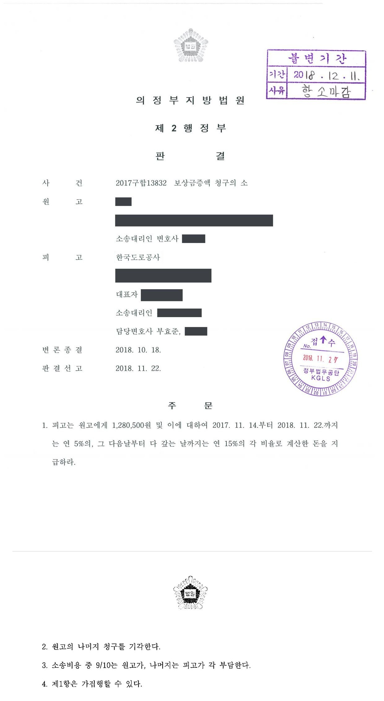

고속도로 수용토지 손실보상금 증액 청구소송
의정부지방법원 2017구합13832 · 담당변호사 부효준
사건의 요지
민간투자 고속도로 사업에 수용된 토지의 소유자가 1억 2천만 원 상당의 보상금 증액을 구한 사건으로, 법원은 감정 결과를 토대로 그중 극히 일부만 인정했습니다.
판결문 1장

비슷한 처분을 받으셨다면
행정처분은 처분이 있음을 안 날부터 90일 이내에 행정심판이나 취소소송으로 다투어야 하고, 기간이 지나면 돌이킬 수 없는 처분은 집행정지를 서둘러야 합니다. 처분서를 받은 날짜부터 확인해 드립니다.